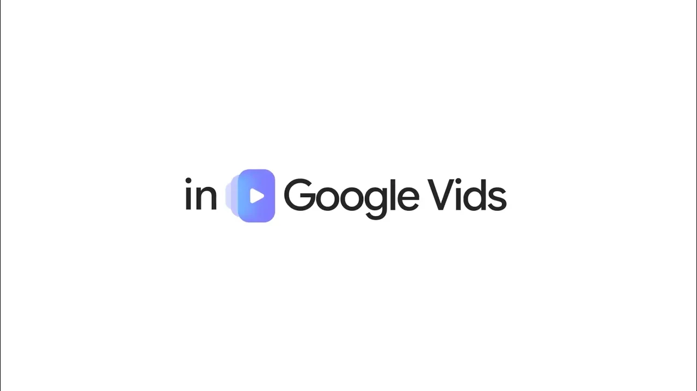

제미나이 옴니로 개인 아바타 영상 만들기 — 구글 브이드 신기능 사용법
'구글 브이드에 나온 제미나이 옴니로 내 얼굴 영상을 만들 수 있다는데 어떻게 하나요', '한국에서도 되나요' — 요즘 이 두 가지를 함께 묻는 분들이 많아요. 만드는 방법 자체는 간단해요. 컴퓨터로 구글 브이드를 열고 개인 아바타 메뉴를 선택한 다음, 스마트폰으로 QR코드를 스캔해서 얼굴과 목소리를 등록하면 돼요. 이 기능은 2026년 7월 16일에 구글이 공식으로 발표했고, 오늘(2026년 8월 11일) 기준으로는 발표된 지 26일이 지난 시점이에요.
구글 브이드는 구글이 만든 영상 제작 도구예요. 정식 명칭은 영어로 Google Vids예요. 그 안에 새로 들어온 제미나이 옴니는 텍스트 프롬프트와 이미지 참고자료로 영상을 만들고, 대화하듯 이어서 수정할 수 있게 해주는 기능이에요. 정식 명칭은 Gemini Omni예요.
개인 아바타는 셀피와 음성을 등록해서 나처럼 보이고 나처럼 말하는 디지털 아바타를 만드는 기능이에요. 정식 명칭은 Personal Avatars예요. 두 기능 모두 구글 브이드 안에서 2026년 7월 16일에 함께 공개됐어요.
구글이 공개한 공식 타이틀 이미지예요. 옴니에 넣을 수 있는 참고 이미지 예시와 개인 아바타용 셀피가 함께 담겨 있어요.
이미지 출처: 구글 공식 블로그 · 네이버 본문엔 받아서 재업로드 권장
개인 아바타는 어떻게 만드나요
개인 아바타 만들기는 구글 브이드 시작 메뉴에서 개인 아바타를 선택한 뒤, 스마트폰으로 화면의 QR코드를 스캔해서 얼굴과 목소리를 촬영·녹음하는 방식이에요.
구글 발표문에는 셀피와 음성 녹음을 업로드하는 방식으로 소개돼 있어요. 다만 실제 단계별 도움말을 보면, 미리 찍어둔 사진 파일을 올리는 게 아니라 스마트폰 카메라로 QR코드를 스캔한 뒤 그 자리에서 화면 지시를 따라가며 얼굴과 목소리를 촬영하는 절차예요.
- 컴퓨터로 구글 브이드를 열어요.
- 시작 메뉴에서 개인 아바타를 선택해요.
- 스마트폰이나 태블릿으로 화면에 뜬 QR코드를 스캔해요.
- 휴대기기 화면 지시에 따라 얼굴과 목소리를 촬영·녹음해요.
- 다음을 눌러요.
- 완성한 영상에서 아바타를 어떻게 움직이게 할지 프롬프트로 설명해요.
- 생성을 눌러 첫 아바타 영상을 만들어요.
구글 공식 도움말에는 이 과정을 계정 소유자 본인이 직접 해야 한다고 나와 있어요. 원문 그대로 옮기면 "계정 소유자가 직접 이 절차를 완료해야 하고, 미성년자가 스스로 촬영하도록 해서는 안 된다"는 문구예요(구글 공식 도움말, Create, use & manage your personal avatar with Gemini in Google Vids).
촬영할 때 참고하면 좋은 조건도 같은 도움말에 정리돼 있어요.
- 폰을 눈높이에 맞춰 들어요.
- 너무 어둡거나 밝지 않은 조명에서 촬영해요.
- 눈·코·입이 보여야 해요 — 안경은 괜찮지만 선글라스·마스크·모자는 안 돼요.
- 목소리를 녹음할 땐 다른 사람 목소리가 섞이지 않는 조용한 곳을 골라요.
- 배경에 다른 사람이나 얼굴 이미지가 없어야 해요.
만든 아바타로 실제 영상은 어떻게 만드나요
이미 등록한 개인 아바타로 새 영상을 만들 때는 구글 브이드에서 영상을 연 다음 우측 패널의 AI 영상 메뉴에서 아바타를 골라 하고 싶은 말을 입력하는 순서예요.
- 구글 브이드에서 영상을 열어요.
- 우측 패널에서 AI 영상, 만들기, 아바타를 차례로 선택해요.
- 등록해 둔 개인 아바타를 선택해요.
- 아바타가 어떻게 움직였으면 하는지 프롬프트로 설명해요.
- 필요하면 대사(스크립트)를 추가하고, 촬영 방향 같은 요소도 함께 정할 수 있어요.
- 생성을 눌러요.
- 만들어진 영상은 삽입·삭제·길이 늘리기·수정·다시 만들기 중에서 골라 마무리해요.
타이핑한 메시지를 아바타가 그대로 말해주는 방식이라 카메라 앞에 설 필요가 없어요. 구글은 셀피와 짧은 음성 녹음만 등록해 두면, 이후엔 하고 싶은 말을 글로 입력하는 것만으로 아바타가 그 메시지를 대신 전달한다고 설명해요.

구글이 유튜브에 올린 개인 아바타 공식 시연 영상의 시작 화면이에요. 실제 촬영·생성 과정은 이 영상에서 확인할 수 있어요.
영상 출처: 구글 공식 유튜브 — Star in your videos with Personal Avatars in Google Vids
제미나이 옴니로 영상 편집은 어떻게 하나요
제미나이 옴니로 하는 편집은 배경을 바꾸거나 조명을 고치거나 효과를 추가해 달라고 문장으로 요청하는 방식이에요.
처음 영상을 만들 때는 텍스트 프롬프트에 더해 사진이나 러프 스케치 같은 이미지 참고자료를 함께 넣을 수 있어요. 옴니가 이 입력들을 조합해서 원하는 느낌에 맞는 영상을 만들어줘요. 이 편집 방식은 옴니로 새로 만든 영상뿐 아니라 폰으로 직접 찍은 영상에도 똑같이 쓸 수 있어요.
이용 조건은 뭔가요, 한국에서도 되나요
구글 브이드의 제미나이 옴니와 개인 아바타는 Google AI Pro·Ultra 구독자와 Google Workspace 비즈니스 고객이 쓸 수 있고, 개인 아바타는 여기에 만 18세 이상이라는 조건이 추가로 붙어요.
| 항목 | 내용 |
|---|---|
| 이용 가능 대상 | Google AI Pro·Ultra 구독자, Google Workspace 비즈니스 고객(구글 공식 발표) |
| 개인 아바타 추가 조건 | 만 18세 이상(구글 공식 도움말) |
| 지원 언어 | 영어만 지원(구글 공식 도움말) |
| 이용 불가 지역 | EEA·스위스·영국(구글 공식 도움말) |
| 아바타 소유·연결 | 본인 구글 계정에 연결, 계정 소유자 본인 초상으로 제한 |
| 한국 이용 가능 여부 | 공식 문서에 별도 명시 없음 |
한국이 포함되는지 제외되는지는 구글 공식 문서 어디에도 나와 있지 않아요. 이용 불가로 명시된 지역은 EEA·스위스·영국이고, 나머지 지역은 구글이 따로 밝히지 않았어요. 그래서 지금은 본인 구글 계정으로 구글 브이드를 열어서 개인 아바타 메뉴가 실제로 뜨는지 직접 확인하는 게 가장 정확해요.
구글 브이드의 AI 아바타 도움말에는 플랜별로 한 달에 최대 25회까지 아바타 영상을 만들 수 있고, 영상 길이는 최대 60초라는 한도도 나와 있어요. 다만 이 한도가 개인 아바타에도 똑같이 적용되는지는 문서에 따로 명시돼 있지 않아요.
만들어진 영상에는 눈에 보이지 않는 SynthID 워터마크가 자동으로 들어가요. 구글은 이 워터마크가 AI로 만든 영상인지 확인할 수 있게 해주는 투명성 장치라고 설명해요.
자주 묻는 질문
Q. 촬영한 얼굴·음성 데이터를 나중에 지우거나 다시 찍을 수 있나요?
네, 가능해요. 아바타 메뉴에서 더보기를 누르면 다시 찍기는 다시 촬영으로, 완전 삭제는 관리로 들어가요. 관리를 선택하면 구글 계정 페이지로 이동해서 개인 아바타 데이터를 지울 수 있어요. 이 설정은 제미나이 앱처럼 아바타를 함께 쓰는 다른 구글 서비스에도 그대로 반영돼요.
Q. 개인 아바타가 한국어로도 말해주나요?
아직은 안 돼요. 구글 공식 도움말에는 "개인 아바타는 현재 영어만 지원한다"고 적혀 있어요. 한국어 지원 여부는 이후 구글이 별도로 발표해야 확인할 수 있는 부분이에요.
참고한 곳
· 구글 공식 블로그 — Gemini Omni and personal avatars in Google Vids
· 구글 공식 도움말 — Use AI avatars in Google Vids
· 구글 공식 도움말 — Create, use & manage your personal avatar with Gemini in Google Vids
✔ 같이 보면 좋아요
· 제미나이 3.6 플래시 등 경량 모델 3종 정리 — 3.5 플래시 대비 뭐가 달라졌나요
· 제미나이 작업 자동화 쓰는 법 — 쇼핑·예약·여행·티켓까지 대신 시키기
하루 정리
· 개인 아바타는 셀피 파일을 올리는 게 아니라, 폰으로 QR코드를 스캔해 얼굴과 목소리를 그 자리에서 촬영·녹음하는 방식이에요(2026.07.16 구글 공식 도움말 기준).
· 이용 조건은 Google AI Pro·Ultra 구독자 또는 Google Workspace 비즈니스 고객, 만 18세 이상, 지원 언어는 영어뿐이에요.
· 한국이 되는지 안 되는지는 구글이 공식적으로 밝히지 않았어요 — 본인 계정에서 메뉴가 뜨는지 직접 켜보는 게 지금은 가장 확실한 방법이에요.
· 카메라 앞에 서기 애매한 순간엔 미리 등록해 둔 아바타에 대사만 새로 입력해서 짧은 영상을 만들 수 있어요.